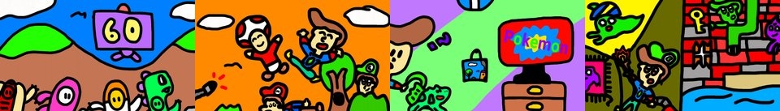

by Hulki Okan Tabak · Async Art Master #3161 · four-phase · time rule: UTC
Updates four times a day to reflect sunrise / day / sunset / night cycles.

Sunrise 06:00–06:59 · Day 07:00–17:59 · Sunset 18:00–18:59 · Night 19:00–05:59 (UTC)
The full-size files live on IPFS; each is linked on three public gateways, in the order to try them (gateway.pinata.cloud, ipfs.io, dweb.link). Every line says what our own check found: 5 not pinned by us yet, 1 our own copy, pinned here and verified on upload.
QmeGmVYYZ3qqc7… gateway.pinata.cloud · ipfs.io · dweb.link — not pinned by us yet, checked 2026-09-23 09:13QmVPLqLsSqNcj4… gateway.pinata.cloud · ipfs.io · dweb.link — not pinned by us yet, checked 2026-09-23 09:13QmV8RAfLAPNoB3… gateway.pinata.cloud · ipfs.io · dweb.link — not pinned by us yet, checked 2026-09-23 09:13QmbgcvdTUDQJSK… gateway.pinata.cloud · ipfs.io · dweb.link — not pinned by us yet, checked 2026-09-23 09:13bafybeic6g5fzy… gateway.pinata.cloud · ipfs.io · dweb.link — our own copy, pinned here and verified on upload, checked 2026-09-22QmVmV6fA3rVXCb… gateway.pinata.cloud · ipfs.io · dweb.link — not pinned by us yet, checked 2026-09-23 09:13QmVPLqLsSqNcj4… gateway.pinata.cloud · ipfs.io · dweb.link — not pinned by us yet, checked 2026-09-23 09:13QmVPLqLsSqNcj4… gateway.pinata.cloud · ipfs.io · dweb.link — not pinned by us yet, checked 2026-09-23 09:13QmbgcvdTUDQJSK… gateway.pinata.cloud · ipfs.io · dweb.link — not pinned by us yet, checked 2026-09-23 09:13QmeGmVYYZ3qqc7… gateway.pinata.cloud · ipfs.io · dweb.link — not pinned by us yet, checked 2026-09-23 09:13QmV8RAfLAPNoB3… gateway.pinata.cloud · ipfs.io · dweb.link — not pinned by us yet, checked 2026-09-23 09:13Bulbasaur 9 series on Async Art is a collaboration between Hulki Okan Tabak and Bulbasaur 9 as a father - son team. Unless extra information is given, all drawings are by B9 and editing is by HoT. Bulbasaur 9 is an emerging artist, YouTuber and storyteller. You can find more about him on his YouTube channel at https://www.youtube.com/channel/UCRjLXhHKyBpI813vFvMiMVQ. This series is a result of library search by the duo. Some of the works were previously minted and burned afterwards. Some of them are minted for the first time. The series runs through 7 sets of 4 artworks, 1 HoT influenced special collaboration and 1 set titled Falling into the Tree. Due to the programmable nature of…
async.art · OpenSea · Etherscan
Generated archive pages. Content identifiers point to the public IPFS network.